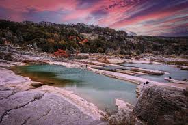

Texas Nature Parks
Texas is a haven for outdoor enthusiasts, offering a diverse range of landscapes from desert trails to lush forest reserves. Whether you're hiking, camping, or birdwatching, there’s something for everyone. Let's explore some of the most iconic parks across the state!

Top Nature Parks in Texas
Here are a few of the most popular parks that highlight the beauty and diversity of Texas:
- Big Bend National Park: Located in West Texas, Big Bend is famous for its desert landscapes, towering mountains, and rich biodiversity. It offers amazing hiking trails and scenic views, perfect for adventurous souls.
- Palo Duro Canyon: Often referred to as the “Grand Canyon of Texas,” this stunning canyon is the second largest in the U.S. It’s a great spot for hiking, horseback riding, and camping, offering dramatic landscapes.
- Guadalupe Mountains National Park: This park features the highest peak in Texas, Guadalupe Peak. It is ideal for hiking, backpacking, and offers spectacular views of the surrounding desert landscape.
- Lake Livingston State Park: A popular spot for boating, fishing, and picnicking, this state park is great for a weekend getaway with family and friends. The park is located near the beautiful Lake Livingston.
- Government Canyon State Natural Area: This park is home to many trails, including a favorite for hiking and wildlife viewing. It’s perfect for a day trip to enjoy the natural beauty of the Texas Hill Country.
Why Visit Texas Nature Parks?
Texas offers a variety of experiences, from lush forests to rugged deserts, and is a paradise for nature lovers. These parks provide a rare opportunity to experience the state's natural wonders, whether you're an avid hiker, a birdwatcher, or just want to enjoy the outdoors.
Explore the Parks on the Map
Things to Do in Texas Nature Parks
Whether you’re into hiking, biking, camping, or simply observing wildlife, there’s plenty to do in Texas' nature parks. Here are a few popular activities:
- Hiking & Backpacking: Most parks have trails for all levels, ranging from easy walks to challenging multi-day treks.
- Wildlife Watching: Texas parks are home to a wide variety of animals, including bighorn sheep, wild turkeys, and migratory birds.
- Camping: Many parks offer both primitive and developed campsites for an authentic outdoor experience.
- Stargazing: Texas’ wide-open skies provide some of the best stargazing opportunities, especially in remote areas like Big Bend.